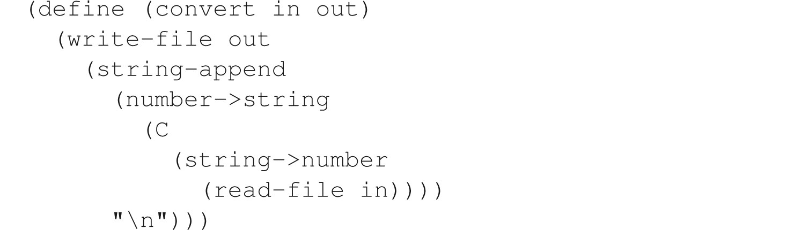
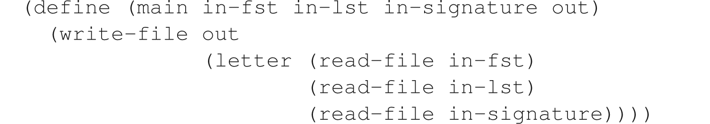
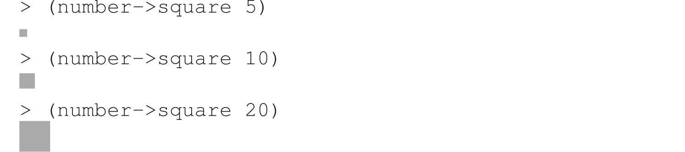
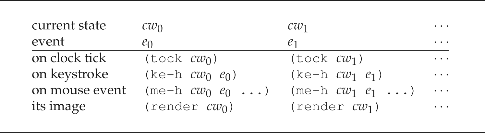
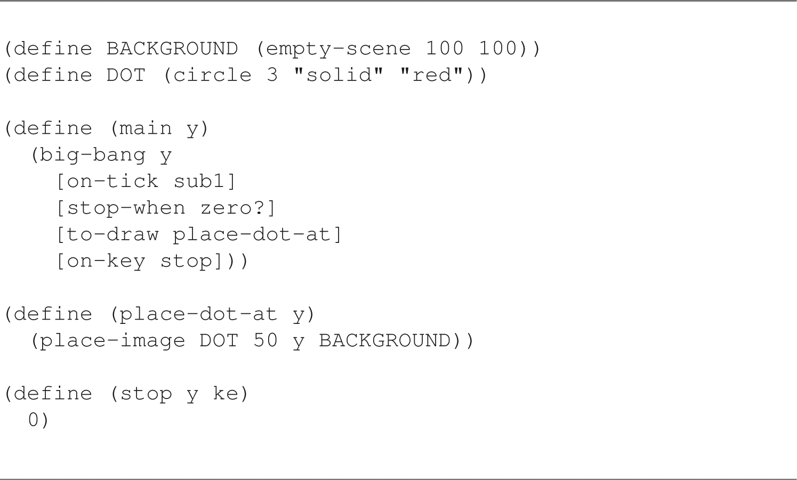
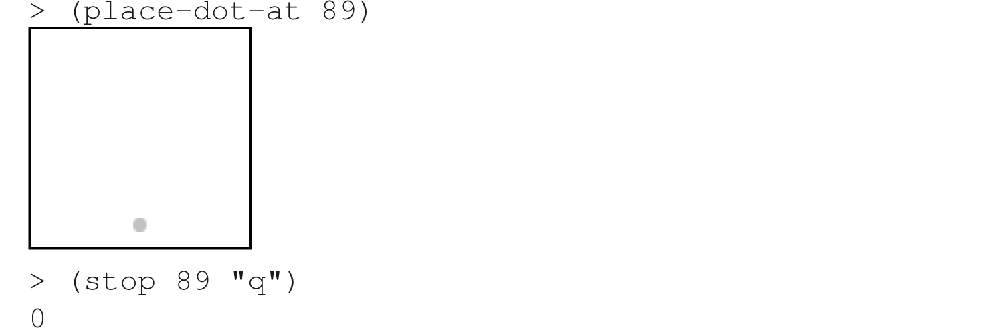

2.5 Programs
You are ready to create simple programs. From a coding perspective, a program is just a bunch of function and constant definitions. Usually one function is singled out as the “main” function, and this main function tends to compose others. From the perspective of launching a program, however, there are two distinct kinds:
• a batch program consumes all of its inputs at once and computes its result. Its main function is the composition of auxiliary functions, which may refer to additional auxiliary functions, and so on. When we launch a batch program, the operating system calls the main function on its inputs and waits for the program’s output.
• an interactive program consumes some of its inputs, computes, produces some output, consumes more input, and so on. When an input shows up, we speak of an event, and we create interactive programs as event-driven programs. The main function of such an event-driven program uses an expression to describe which functions to call for which kinds of events. These functions are called event handlers.
When we launch an interactive program, the main function informs the operating system of this description. As soon as input events happen, the operating system calls the matching event handler. Similarly, the operating system knows from the description when and how to present the results of these function calls as output.
This book focuses mostly on programs that interact via graphical user interfaces (GUI); there are other kinds of interactive programs, and you will get to know those as you continue to study computer science.
Batch Programs As mentioned, a batch program consumes all of its inputs at once and computes the result from these inputs. Its main function expects some arguments, hands them to auxiliary functions, receives results from those, and composes these results into its own final answer.
Once programs are created, we want to use them. In DrRacket, we launch batch programs in the interactions area so that we can watch the program at work.
Programs are even more useful if they can retrieve the input from some file and deliver the output to some other file. Indeed, the name “batch program” dates to the early days of computing when a program read a file (or several files) from a batch of punch cards and placed the result in some other file(s), also a batch of cards. Conceptually, a batch program reads the input file(s) at once and also produces the result file(s) all at once.
We create such file-based batch programs with the 2htdp/batch-io library, which adds two functions to our vocabulary (among others):
• read-file, which reads the content of an entire file as a string, and
• write-file, which creates a file from a given string.
These functions write strings to files and read strings from them:
> (write-file "sample.dat" "212")
"sample.dat"
> (read-file "sample.dat")
"212"
Before you evaluate these expressions, save the definitions area in a file.
After the first interaction the file named "sample.dat" contains
212
The result of write-file is an acknowledgment that it has placed the string in the file. If the file already exists, it replaces its content with the given string; otherwise, it creates a file and makes the given string its content. The second interaction, (read-file "sample.dat"), produces "212" because it turns the content of "sample.dat" into a String.
For pragmatic reasons, write-file also accepts 'stdout, a special kind of token, as the first argument. It then displays the resulting file content in the current interactions area, for example:
> (write-file 'stdout "212\n")
212
'stdout
The names 'stdout and 'stdin are short for standard output device and standard input device, respectively.
By analogy, read-file accepts 'stdin in lieu of a file name and then reads input from the current interactions area.
Let’s illustrate the creation of a batch program with a simple example. Suppose we wish to create a program that converts a temperature measured on a Fahrenheit thermometer into a Celsius temperature. Don’t worry, this question isn’t a test about your physics knowledge; here is the conversion formula:
This book is not about memorizing facts, but we do expect you to know where to find them. Do you know where to find out how temperatures are converted?
Naturally, in this formula f is the Fahrenheit temperature and C is the Celsius temperature. While this formula might be good enough for a pre-algebra textbook, a mathematician or a programmer would write C(f ) on the left side of the equation to remind readers that f is a given value and C is computed from f.
Translating this formula into BSL is straightforward:
(define (C f)
(* 5/9 (- f 32)))
Recall that 5/9 is a number, a rational fraction to be precise, and that C depends on the given f, which is what the function notation expresses.
Launching this batch program in the interactions area works as usual:
> (C 32)
0
> (C 212)
100
> (C -40)
-40
But suppose we wish to use this function as part of a program that reads the Fahrenheit temperature from a file, converts this number into a Celsius temperature, and then creates another file that contains the result.
Once we have the conversion formula in BSL, creating the main function means composing C with existing primitive functions:

We call the main function convert. It consumes two file names: in for the file where the Fahrenheit temperature is found and out for where we want the Celsius result. A composition of five functions computes convert’s result. Let’s step through convert’s body carefully:
1. (read-file in) retrieves the content of the named file as a string;
2. string->number turns this string into a number;
3. C interprets the number as a Fahrenheit temperature and converts it into a Celsius temperature;
4. number->string consumes this Celsius temperature and turns it into a string; and
5. (write-file out…) places this string into the file named out.
This long list of steps might look overwhelming, and it doesn’t even include the string-append part. Stop! Explain
(string-append … "\n")
In contrast, the average function composition in a pre-algebra course involves two functions, possibly three. Keep in mind, though, that programs accomplish a real-world purpose while exercises in algebra merely illustrate the idea of function composition.
At this point, we can experiment with convert. To start with, we use write-file to create an input file for convert:
> (write-file "sample.dat" "212")
"sample.dat"
> (convert "sample.dat" 'stdout)
100
'stdout
> (convert "sample.dat" "out.dat")
"out.dat"
> (read-file "out.dat")
"100"
You can also create "sample.dat" with a file editor.
For the first interaction, we use 'stdout so that we can view what convert outputs in DrRacket’s interactions area. For the second one, convert is given the name "out.dat". As expected, the call to convert returns this string; from the description of write-file we also know that it deposited a Fahrenheit temperature in the file. Here we read the content of this file with read-file, but you could also view it with a text editor.
In addition to running the batch program, it is also instructive to step through the computation. Make sure that the file "sample.dat" exists and contains just a number, then click the STEP button in DrRacket. Doing so opens another window in which you can peruse the computational process that the call to the main function of a batch program triggers. You will see that the process follows the above outline.
Exercise 31. Recall the letter program from chapter 2.3. Here is how to launch the program and have it write its output to the interactions area:
> (write-file
'stdout
(letter "Matthew" "Fisler" "Felleisen"))
Dear Matthew,
We have discovered that all people with the
last name Fisler have won our lottery. So,
Matthew, hurry and pick up your prize.
Sincerely,
Felleisen
'stdout
Of course, programs are useful because you can launch them for many different inputs. Run letter on three inputs of your choice.
Here is a letter-writing batch program that reads names from three files and writes a letter to one:

The function consumes four strings: the first three are the names of input files and the last one serves as an output file. It uses the first three to read one string each from the three named files, hands these strings to letter, and eventually writes the result of this function call into the file named by out, the fourth argument to main.
Create appropriate files, launch main, and check whether it delivers the expected letter in a given file. 
Interactive Programs Batch programs are a staple of business uses of computers, but the programs people encounter now are interactive. In this day and age, people mostly interact with desktop applications via a keyboard and a mouse. Furthermore, interactive programs can also react to computer-generated events, for example, clock ticks or the arrival of a message from some other computer.
Exercise 32. Most people no longer use desktop computers just to run applications but also employ cell phones, tablets, and their cars’ information control screen. Soon people will use wearable computers in the form of intelligent glasses, clothes, and sports gear. In the somewhat more distant future, people may come with built-in bio computers that directly interact with body functions. Think of ten different forms of events that software applications on such computers will have to deal with.
The purpose of this section is to introduce the mechanics of writing interactive BSL programs. Because many of the project-style examples in this book are interactive programs, we introduce the ideas slowly and carefully. You may wish to return to this section when you tackle some of the interactive programming projects; a second or third reading may clarify some of the advanced aspects of the mechanics.
By itself, a raw computer is a useless piece of physical equipment. It is called hardware because you can touch it. This equipment becomes useful once you install software, that is, a suite of programs. Usually the first piece of software to be installed on a computer is an operating system. It has the task of managing the computer for you, including connected devices such as the monitor, the keyboard, the mouse, the speakers, and so on. The way it works is that when a user presses a key on the keyboard, the operating system runs a function that processes keystrokes. We say that the keystroke is a key event, and the function is an event handler. In the same vein, the operating system runs an event handler for clock ticks, for mouse actions, and so on. Conversely, after an event handler is done with its work, the operating system may have to change the image on the screen, ring a bell, print a document, or perform a similar action. To accomplish these tasks, it also runs functions that translate the operating system’s data into sounds, images, actions on the printer, and so on.
Naturally, different programs have different needs. One program may interpret keystrokes as signals to control a nuclear reactor; another passes them to a word processor. To make a general-purpose computer work on these radically different tasks, different programs install different event handlers. That is, a rocket-launching program uses one kind of function to deal with clock ticks while an oven’s software uses a different kind.
Designing an interactive program requires a way to designate some function as the one that takes care of keyboard events, another function for dealing with clock ticks, a third one for presenting some data as an image, and so forth. It is the task of an interactive program’s main function to communicate these designations to the operating system, that is, the software platform on which the program is launched.
DrRacket is a small operating system, and BSL is one of its programming languages. The latter comes with the 2htdp/universe library, which provides big-bang, a mechanism for telling the operating system which function deals with which event. In addition, big-bang keeps track of the state of the program. To this end, it comes with one required sub-expression, whose value becomes the initial state of the program. Otherwise big-bang consists of one required clause and many optional clauses. The required to-draw clause tells DrRacket how to render the state of the program, including the initial one. Each of the other, optional clauses tells the operating system that a certain function takes care of a certain event. Taking care of an event in BSL means that the function consumes the state of the program and a description of the event, and that it produces the next state of the program. We therefore speak of the current state of the program.
Terminology In a sense, a big-bang expression describes how a program connects with a small segment of the world. This world might be a game that the program’s users play, an animation that the user watches, or a text editor that the user employs to manipulate some notes. Programming language researchers therefore often say that big-bang is a description of a small world: its initial state, how states are transformed, how states are rendered, and how big-bang may determine other attributes of the current state. In this spirit, we also speak of the state of the world and even call big-bang programs world programs. End
Let’s study this idea step-by-step, starting with this definition:
(define (number->square s)
(square s "solid" "red"))
The function consumes a positive number and produces a solid red square of that size. After clicking RUN, experiment with the function, like this:

It behaves like a batch program, consuming a number and producing an image, which DrRacket renders for you.
Now try the following big-bang expression in the interactions area:
> (big-bang 100 [to-draw number->square])
A separate window appears, and it displays a 100 × 100 red square. In addition, the DrRacket interactions area does not display another prompt; it is as if the program keeps running, and this is indeed the case. To stop the program, click on DrRacket’s STOP button or the window’s CLOSE button:
> (big-bang 100 [to-draw number->square])
100
When DrRacket stops the evaluation of a big-bang expression, it returns the current state, which in this case is just the initial state: 100.
Here is a more interesting big-bang expression:
> (big-bang 100
[to-draw number->square]
[on-tick sub1]
[stop-when zero?])
This big-bang expression adds two optional clauses to the previous one: the on-tick clause tells DrRacket how to deal with clock ticks and the stop-when clause says when to stop the program. We read it as follows, starting with 100 as the initial state:
1. every time the clock ticks, subtract 1 from the current state;
2. then check whether zero? is true of the new state and if so, stop; and
3. every time an event handler returns a value, use number->square to render it as an image.
Now hit the “return” key and observe what happens. Eventually the evaluation of the expressions terminates and DrRacket displays 0.
The big-bang expression keeps track of the current state. Initially this state is 100. Every time the clock ticks, it calls the clock-tick handler and gets a new state. Hence, the state of big-bang changes as follows:
100, 99, 98,…, 2, 1, 0
When the state’s value becomes 0, the evaluation is done. For every other state—from 100 to 1—big-bang translates the state into an image, using number->square as the to-draw clause tells it to. Hence, the window displays a red square that shrinks from 100 × 100 pixels to 1 × 1 pixel over 100 clock ticks.
Let’s add a clause for dealing with key events. First, we need a function that consumes the current state and a string that describes the key event and then returns a new state:
(define (reset s ke)
100)
This function throws away its arguments and returns 100, which is the initial state of the big-bang expression we wish to modify. Second, we add an on-key clause to the big-bang expression:
> (big-bang 100
[to-draw number->square]
[on-tick sub1]
[stop-when zero?]
[on-key reset])
Stop! Explain what happens when you hit “return”, count to 10, and finally press "a".
What you will see is that the red square shrinks at the rate of one pixel per clock tick. As soon as you press the "a" key, though, the red square reinflates to full size because reset is called on the current length of the square and "a" and returns 100. This number becomes big-bang’s new state and number->square renders it as a full-sized red square.
In order to understand the evaluation of big-bang expressions in general, let’s look at a schematic version:
(big-bang cw0
[on-tick tock]
[on-key ke-h]
[on-mouse me-h]
[to-draw render]
[stop-when end?]
…)
This big-bang expression specifies three event handlers—tock, ke-h, and me-h—and a stop-when clause.
The evaluation of this big-bang expression starts with cw0, which is usually an expression. DrRacket, our operating system, installs the value of cw0 as the current state. It uses render to translate the current state into an image, which is then displayed in a separate window. Indeed, render is the only means for a big-bang expression to present data to the world.
Here is how events are processed:
• Every time the clock ticks, DrRacket applies tock to big-bang’s current state and receives a value in response; big-bang treats this return value as the next current state.
• Every time a key is pressed, DrRacket applies ke-h to big-bang’s current state and a string that represents the key; for example, pressing the “a” key is represented with "a" and the left arrow key with "left". When ke-h returns a value, big-bang treats it as the next current state.
• Every time a mouse enters the window, leaves it, moves, or is clicked, DrRacket applies me-h to big-bang’s current state, the event’s x- and y-coordinates, and a string that represents the kind of mouse event that happened; for example, clicking a mouse’s button is represented with "button-down". When me-h returns a value, big-bang treats it as the next current state.
All events are processed in order; if two events seem to happen at the same time, DrRacket acts as a tie-breaker and arranges them in some order.
After an event is processed, big-bang uses both end? and render to check the current state:
• (end? cw) produces a Boolean value. If it is ##true, big-bang stops the computation immediately. Otherwise it proceeds.
• (render cw) is expected to produce an image and big-bang displays this image in a separate window.
The table in figure 13 concisely summarizes this process. In the first row, it lists names for the current states. The second row enumerates names for the events that DrRacket encounters: e0, e1, and so on. Each ei might be a clock tick, a key press, or a mouse event. The next three rows specify the result of dealing with the event:
• If e0 is a clock tick, big-bang evaluates (tock cw0) to produce cw1.
• If e0 is a key event, (ke-h cw0 e0) is evaluated and yields cw1. The handler must be applied to the event itself because, in general, programs are going to react to each key differently.
• If e0 is a mouse event, big-bang runs (me-h cw0 e0 …) to get cw1. The call is a sketch because a mouse event e0 is really associated with several pieces of data—its nature and its coordinates—and we just wish to indicate that much.
• Finally, render turns the current state into an image, which is indicated by the last row. DrRacket displays these images in the separate window.

Figure 13: How big-bang works
The column below cw1 shows how cw2 is generated, depending on what kind of event e1 takes place.
Let’s interpret this table with the specific sequence of events: the user presses the “a” key, then the clock ticks, and finally the user clicks the mouse to trigger a “button down” event at position (90,100). Then, in Racket notation,
1. cw1 is the result of (ke-h cw0 "a");
2. cw2 is the result of (tock cw1); and
3. cw3 is the result of (me-h cw2 90 100 "button-down").
We can actually express these three steps as a sequence of three definitions:
(define cw1 (ke-h cw0 "a"))
(define cw2 (tock cw1))
(define cw3 (me-h cw2 "button-down" 90 100))
Stop! How does big-bang display each of these three states?
Now let’s consider a sequence of three clock ticks. In that case,
1. cw1 is the result of (tock cw0);
2. cw2 is the result of (tock cw1); and
3. cw3 is the result of (tock cw2).
Or, reformulated in BSL:
(define cw1 (tock cw0))
(define cw2 (tock cw1))
(define cw3 (tock cw2))
Indeed, we can also determine cw3 via a single expression:
(tock (tock (tock cw0)))
This determines the state that big-bang computes after three clock ticks. Stop! Reformulate the first sequence of events as an expression.
In short, the sequence of events determines in which order big-bang conceptually traverses the above table of possible states to arrive at the current state for each time slot. Of course, big-bang does not touch the current state; it merely safeguards it and passes it to event handlers and other functions when needed.
From here, it is straightforward to define a first interactive program. See figure 14. The program consists of two constant definitions followed by three function definitions: main, which launches a big-bang interactive program; place-dot-at, which translates the current state into an image; and stop, which throws away its inputs and produces 0.

Figure 14: A first interactive program
After clicking RUN, we can ask DrRacket to evaluate applications of these handler functions. This is one way to confirm their workings:

Stop! Try now to understand how main reacts when you press a key.
One way to find out whether your conjecture is correct is to launch the main function on some reasonable number:
> (main 90)
Relax.
By now, you may feel that these first two chapters are overwhelming. They introduce many new concepts, including a new language, its vocabulary, its meaning, its idioms, a tool for writing down texts in this vocabulary, and a way of running these programs. Confronted with this plethora of ideas, you may wonder how one creates a program when presented with a problem statement. To answer this central question, the next chapter takes a step back and explicitly addresses the systematic design of programs. So take a breather and continue when ready.